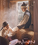
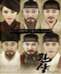
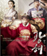
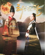

> 공연 · 행사 > 사극마당
사극마당
사극히스토리
한류의 중심, 사극의 메카 한국민속촌
-
- 2019
- 한류의 중심, 사극의 메카
- 정통사극은 물론 퓨전사극까지 다양한 작품을
통해 한국을 넘어 세계로 뻗어나가고 있음
- 킹덤
- 2019.01.25
- 
- 백일의 낭군님
- 2018.09.10
- 대군
- 2018.03.03
- 별에서 온 그대
- 2013.12~2014.2
- 
- 관상
- 2013.09.11
- 
- 광해
- 2012.09.13
- 
- 백일의 낭군님
- 2012.03~2012.04
-
- 2008
- 제 2의 전성기
- 사극 붐이 다시 일어나자마자 다시 한번
사극드라마의 메카이자, 한류의 중심으로
자리잡게 되었고 국내는 물로 국외까지
인기를 얻어 한국에 오면 꼭 들려야 하는
베스트 여행지로 손꼽히게 됨
- 이산
- 2007.09~2008.06
- 왕과 나
- 2007.08~2008.04
-
- 2005
- 사극의 중심
- 명실공히 사극의 중심지로 떠올라 2000년대 들어 다수의 사극 작품의 촬영을 진행
- 대장금
- 2003.09~2004.03
- 다모
- 2003.07~2003.09
-
- 1996
- 사극드라마 스타 탄생
- 점차적으로 사극촬영지로 주목을 받게 되며
드라마의 높은 시청률과 함께 촬영지로
주목 받게 됨
- 용의 눈물
- 1996.11~1998.05
-
- 1983
- 드라마 세계로 입문
- 기존의 야외박물관에서 드라마 촬영장으로
거듭나는 계기를 만듦.
촬영기간 7년으로 역대 한국민속촌 최장기간
촬영기록을 갖고 있는 작품
- 조선왕조 오백년
- 1983.03~1990.12